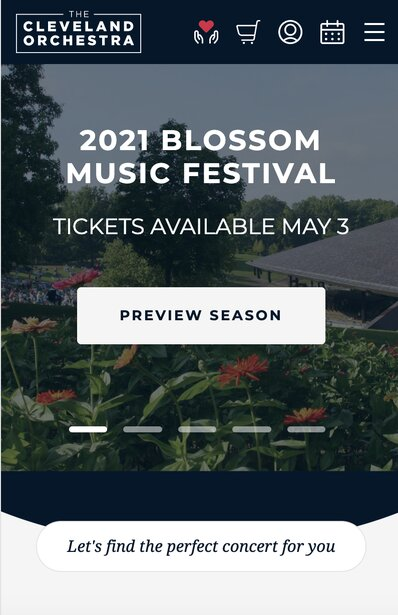
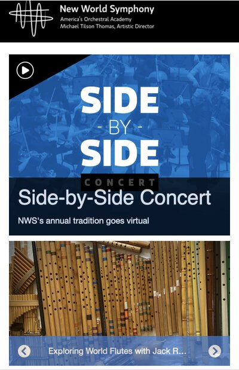

Visual Heirarchy
The Cleveland Orchestra
The Cleveland Orchestra websiteThis is the website for The Cleveland Orchestra. I think it's a great example of visual heirarchy. Making the button to "Preview the Season" so large compared to the other text on the page makes it obvious that they want you to click on this to go further into the site. It brings attention to the call to action not only from its size but also from making it's color white makes it stand out from the rest of the dark background of the page.
Hick's Law
New World Symphony
New World Symphony websiteThis is the website for the New World Symphony. I think it's an example of Hicks's because it gives limited choices for the user to click on in the span of a screen. This gives the user more focus on what they should choose to navigate to. The user only comes across maybe one or two choices at a time of what to click on.
White Space
Audition Cafe
Audition Cafe websiteThis is the website for the online audition posting site Audition Cafe. It think it's a good example of white space because there is plenty of white space between each instrument which makes it feel uncluttered. The symmetry of the columns of the images of the instruments also leads to a balanced, asthetically pleasing design.